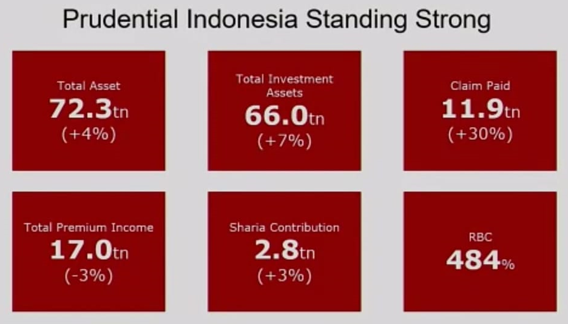
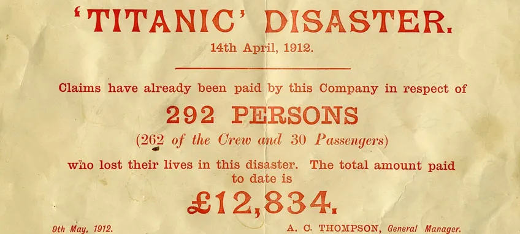

Prudential PLC adalah sebuah grup jasa keuangan internasional terkemuka yang
menyediakan jasa keuangan ritel dan pengelolaan dana di pasar-pasar terpilih : Inggris
Raya, Amerika Serikat, Asia dan Eropa.
Prudential PLC didirikan pada tahun 1848 di Inggris ( tahun). Di Inggris, Prudential melalui anak usaha dan perusahaan afiliasinya adalah penyedia jasa asuransi jiwa dan dana pensiun terkemuka yang menawarkan berbagai produk keuangan ritel di seluruh dunia.
Prudential PLC terdiri dari 3 grup perusahaan yang beroperasi di berbagai wilayah di dunia.
PRUDENTIAL UK
Bagian dari M&G Prudential, bisnis tabungan dan investasi terkemuka, Prudential UK &
Europe memberikan nilai bagi grup melalui fokus tanpa henti pada kebutuhan-kebutuhan asuransi jiwa dan dana pensiun dari kelompok usia dimana kekayaan paling terkonsentrasi.
JACKSON NATIONAL LIFE INSURANCE
Jackson National Life Insurance menyediakan produk-produk dana pensiun yang dirancang dengan seksama untuk 78 juta generasi “baby boomers” di Amerika Serikat, didukung oleh pengalaman lebih dari 60 tahun.
PRUDENTIAL CORPORATION ASIA
Prudential Corporation Asia telah beroperasi lebih dari 95 tahun dengan mengoperasikan bisnis asuransi jiwa di 15 Pasar Asia yaitu Kamboja, China, Hong Kong, India, Indonesia, Jepang, Korea, Laos, Malaysia, Myanmar, Filipina, Singapura, Taiwan, Thailand dan Vietnam. Prudential memiliki landasan
distribusi multi-channel yang kuat dalam menyediakan berbagai jenis simpanan, perlindungan dan produk investasi yang komprehensif, untuk memenuhi beragam kebutuhan nasabah di Asia.
Kantor pusat Prudential Indonesia berlokasi di Prudential Tower Jalan Jenderal Sudirman Kav 79 Jakarta Selatan 12910.
Hasil Bisnis YTD Q3 2021

Pengakuan dari berbagai pihak untuk Prudential Indonesia
Iconomics Corporate Branding PR Award 2021
Iconomics Syariah Award 2021
- The Best Sharia Unit Life Insurance.
Iconomics Marketing Brands Award 2021
Unit Link Awards 2021 - Investor Magazine
- Denominasi IDR Periode 5 tahun, Jenis Saham (PRUlink Rupiah Indonesia Greater China Equity Fund)
- Denominasi IDR Periode 3 Tahun, Jenis Pasar Uang Syariah (PRU link Syariah Rupiah Cash and Bond Fund)
- Denominasi IDR Periode 5 Tahun, Jenis Pasar Uang Syariah (PRU link Syariah Rupiah Cash and Bond Fund)
- Denominasi IDR Periode 7 Tahun, Jenis Pasar Uang Syariah (PRU link Syariah Rupiah Cash and Bond Fund)
- Denominasi IDR Periode 7 Tahun, Jenis Saham (PRUlink Rupiah Indonesia Greater China Equity Fund)
- Denominasi IDR Periode 5 Tahun, Jenis Campuran (PRUlink Rupiah Managed Fund)
- Denominasi IDR Periode 10 Tahun, Jenis Campuran (PRUlink Rupiah Managed Fund)
- Denominasi Dollar Periode 5 Tahun, Jenis Saham (PRUlink US Dollar Indonesia Greater China Equity Fund)
- Denominasi Dollar Periode 5 Tahun, Jenis Pendapatan Tetap (PRUlink US$ Fixed Income Fund)
- Denominasi Dollar Periode 7 Tahun, Jenis Pendapatan Tetap (PRUlink US$ Fixed Income Fund)
- Denominasi Dollar Periode 10 Tahun, Jenis Pendapatan Tetap (PRUlink US$ Fixed Income Fund)
Indonesia's Most Popular Digital Financial Brands
- Millenials Popular Digital Brands in : E-Marketing, Life Insurance >15T
- Millenials Popular Digital Brands in : E-Customer Service, Life Insurance >15T
- Millenials Popular Digital Brands in : E-Claim, Life Insurance >15T
WOW Brand 2021 & Indonesia Branding Campaign of The Year by Markplus
- Gold Champion Category : Life Insurance
- Bronze Champion Campaign PRU25 Selebrasi Sepenuh Hati Category : Digital Campaign
- Silver Champion Campaign PRU25 Selebrasi Sepenuh Hati Category : PRU Campaign
Indonesia Digital Popular Brand Awards - TRAS N CO
- Popular Brand Category: Perusahaan Asuransi
- Popular Brand Category: Asuransi Jiwa
- Popular Brand Category: Asuransi Kesehatan
Indonesia MarComm & CorComm Dream Team 2021
- Effective Team
- Excellent Team
Indonesia Digital Innovation Awards 2020
- Warta Ekonomi - Innovative Company for Providing Omni-Channel Payment System to Customer - Kategori Asuransi Jiwa
Unit Link Awards 2020
- Investor - PRULink Rupiah Equity Fund, Kategori Saham Periode 10 Tahun
- Investor - PRULink Rupiah Managed Fund, Kategori Campuran Periode 10 Tahun
- Investor - PRULink Rupiah Managed Fund Plus, Kategori Campuran Periode 10 Tahun
- Investor - PRULink US$ Fixed Income Fund, Kategori Pendapatan Tetap Denominasi USD Periode 10 Tahun
- Investor - PRULink US$ Fixed Income Fund, Kategori Pendapatan Tetap Denominasi USD Periode 5 Tahun
CSR Brand Equity Award 2020
- Iconomics - Kategori Insurance
9th Infobank Digital Brand Awards 2020
- Kategori Unit Link
- Kategori Asuransi Jiwa Konvensional
Top Digital Company Award 2020
- The Best in Building Digital Transformation - Kategori Life Insurance
Indonesia’s Most Popular Digital Financial Brands 2020 (Millenials Choice)
- Kategori Industri Keuangan Life Insurance 15T
Digital Popular Brand Award 2020
- Infobrand dan Tras n Co - Kategori Perusahaan Asuransi
- Infobrand dan Tras n Co - Kategori Asuransi Jiwa
- Infobrand dan Tras n Co - Asuransi Kesehatan
Indonesia Financial Top Leader Award 2020
- Warta Ekonomi - Best Leader For Business Sustainability Through Business Innovation
Employees Choice Award 2020
Most Innovative Insurance Companies Awards 2020
Infobank Insurance Awards 2020
- The Most Consistent Company To Be Market Leader 2020
Teropong Insurance Award 2020
- Kategori Inovasi Asuransi Digital Terbaik 2020
- Kategori Asuransi Jiwa Tersehat 2020
- Kategori Asuransi Peduli COVID-19
Indonesia WOW Brand 2020
- Gold Champion for Life Insurance Category
Teropong Public Relations (TPR) Award 2020
Infobank Sharia Awards 2020
- Prudential as Sharia Institution with Predicate Excellent for Financial Performance in 2019
Financial Awards 2020 - Millennial's Choice
- Brand Awareness and Brand Image untuk kategori Life Insurance >10T dari Iconomics & RRI
Media Asuransi Award
Iconomics CSR Award 2020
- Inisiatif Tanggap Darurat COVID-19 - Inovasi Layanan & Asuransi Corona
Iconomics PR Award - Top 40 PR Persons 2020
- Luskito Hambali - Chief Marketing & Communications Officer as Iconomics PR Award Top 40 PR Person 2020
Infobank Digital Brand Awards 2019
- 1st Best Overall (Unit Link Saham IDR)
- 2nd Best Overall (Perusahaan Asuransi Jiwa)
- Peringkat 1 (Asuransi Jiwa Konvensional)
Infobank Better Brand 2019 - Better Brand Financial Service
Infobank Unit Link Awards 2019
- Unit Link IDR Berpredikat (PRULink Rupiah Equity Fund)
- Unit Link IDR Berpredikat (PRULink Rupiah Managed Fund)
- Unit Link IDR Berpredikat (PRULink Rupiah Managed Fund Plus)
WOW Brand - Gold Champion Life Insurance
Investor Unit Link Awards 2019
- Pendapatan Tetap Denominasi USD Periode 5 Tahun (PRULink USD Fixed Income Fund)
- Campuran Denominasi Rupiah Periode 10 Tahun (PRULink Rupiah Managed Fund Plus)
- Saham Denominasi USD Periode 5 Tahun (PRULink USD Indonesia Greater China Equity Fund)
- Pendapatan Tetap Denominasi USD Periode 10 Tahun (PRULink USD Fixed Income Fund)
Gatra Indonesia Insurance Innovation Award 2019
- Top 10 Most Trusted Insurance Companies
- Top 3 Most User Friendly & Satisfying Life Insurance Digital Application (PRUAccess Mobile)
SWA Indonesia Best Brand Awards - Best Brand Platinum (Unit Link)
Warta Ekonomi Millennials Top Brand Awards 2019 - 1st Millennial's Choice in Unit
Link Category
Rekor Dunia MURI - Sosialisasi Wakaf Asuransi Peserta Terbanyak

Tenggelamnya Kapal Titanic pada tanggal 14 April 1912 dengan korban jiwa lebih dari 1.500 orang merupakan salah saktu bukti komitmen Prudential dalam membayarkan klaim nasabah.
Sampai bulan Juni 1912, Prudential telah membayarkan klaim sebesar £ 14.239 bagi 324 korban Titanic.